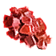
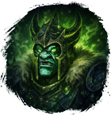
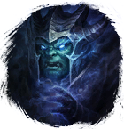
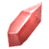

Галит
Предметы / Добыча
Открыть в интерактивной вики →
| Вес | 20 |
|---|---|
| Цена | 620 |
Описание
Требуется для входа в инстанс

Драугул и
Ивравул. А также для выполнения некоторых заданий.| - |
Рецепт
Обмен
Касания
Связи:

Ограненный ГалитГде найти
Применение
|
Как добыть
| Сбор в локации: |